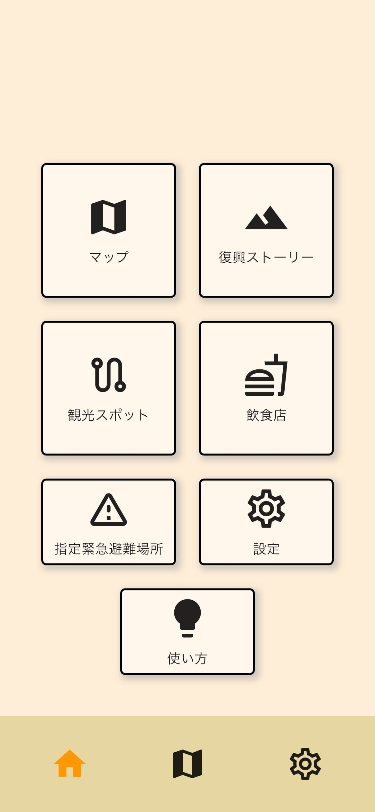

めぐり
「めぐり」は能登半島復興を目的とした、観光用スマートフォンアプリです。
現地へ赴いた際にはもちろん、皆様の自宅でもお楽しみいただけます。
iOS, GooglePlayのリンク
観光マップ
能登の観光スポットと飲食店が表示されているGPSマップ。
観光スポットに行くと、スポットを紹介するナレーション音声が流れます。

復興ストーリー
能登で活動している方へのインタビューを元に作成した記事を収録。
震災から現在に至るまでの歩みを知ることができます。

観光スポット
震災/復旧/復興の様子がわかる場所を観光スポットとしてご紹介。
自宅からでもナレーション音声が楽しめます。

飲食店
能登で営業中の飲食店を検索。
みんなが投稿した口コミで詳しい情報を知れます。

避難場所マップ
緊急時に使える指定緊急避難場所情報を表示したGPSマップ。
オフライン状態でも使うことができます。

And more...
新機能を鋭意開発中！アップデートをお待ちください。
